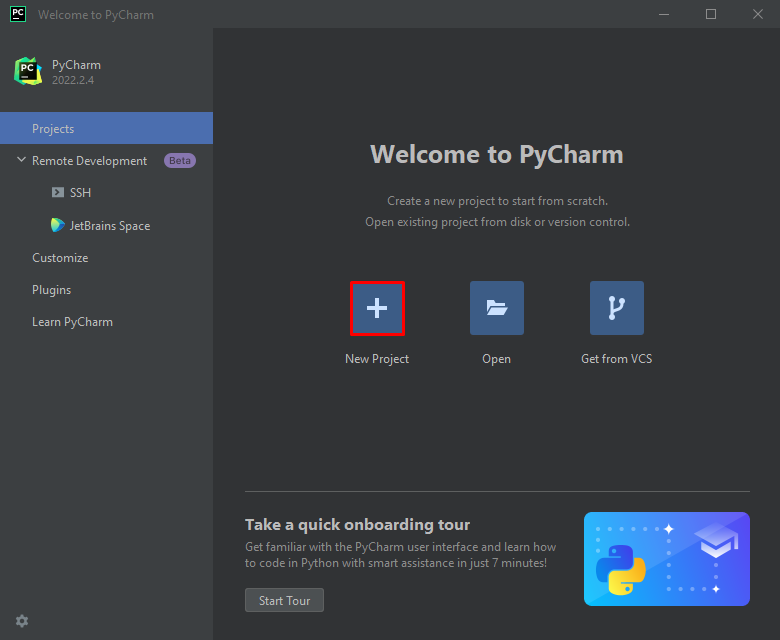
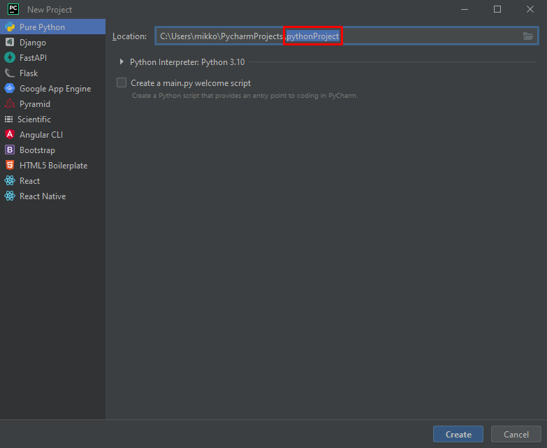
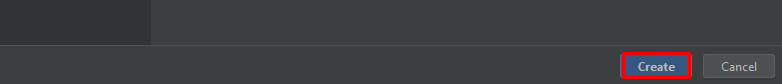
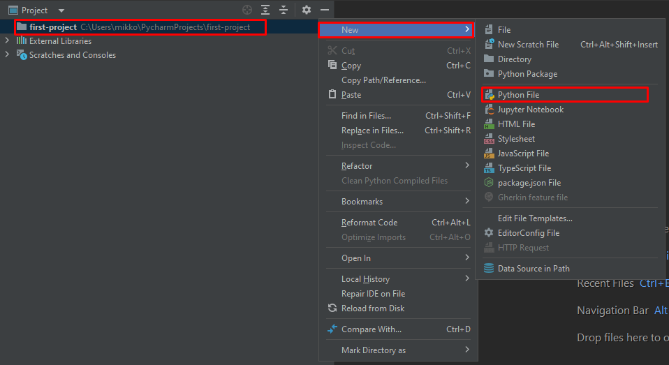
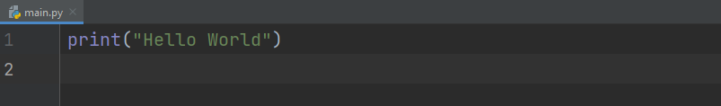
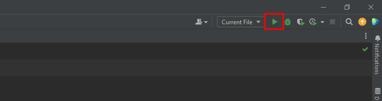
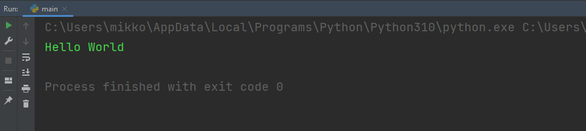
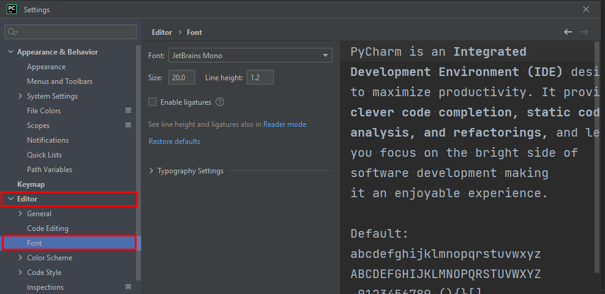
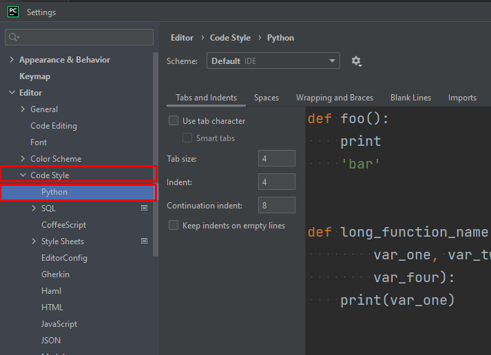
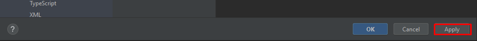

Creating Your First Project
Overview¶
In this section, you will be introduced to the basics of PyCharm such as creating your first project and knowing how to write and run your code. You will also learn how to navigate through the settings to change the way your code looks, and as a result, improving your coding experience.
Creating a Project¶
We will start out by opening up Pycharm and creating a folder for our Python project.
-
Open up Pycharm and Click on 'New Project'. 
-
Replace "pythonProject" with any name of your choice to rename your project. 
-
Click on 'Create' to finish creating your new project.

Success
You have successfully created a new project folder. Your project should now pop up in a new window.
Writing Python Code¶
After successfully making a project folder in Pycharm, we can now write and run our first Python code.
-
Make a new Python file by right clicking on your project folder.  After naming your file, you should now be able to see your new Python file under your project folder.
-
Copy this code and paste it onto your IDE.

-
Click on the green play button at the top right of your window. 
Info
Alternatively, you can also use Shift+F10 as a shortcut to run your code.
After running your code, a terminal should pop up at the bottom of your window with your output. 
Success
Congratulations, you have written your first Python code! You are now a programmer!
Editing Preference Settings¶
Now, you will learn how to change your settings according to your preferences in order to give yourself a better coding experience.
-
Open up your settings by navigating to the File dropdown at the top left of your window.

Info
Alternatively, you can also use Ctrl+Alt+S as a shortcut to open up the settings.
-
Navigate to the 'Font' menu in the 'Editor' dropdown. 
Info
Changing the 'Size' will allow you to edit your font size. Changing the 'Line height' will allow you to edit the spacing between your lines. Opening up the 'Font' dropdown will allow you to view all the available fonts in Pycharm.
-
Navigate to Python in the Code Style dropdown. 
Info
In this menu, you are able to edit your code style settings of your Python code. You can change 'Indent' to edit the sizing of the indentation in your code. You are also able to view tab characters by checking the box of 'Use tab character'.
-
Click 'Apply' to save your changes and 'Ok' to close the window. 
Success
You can now successfully navigate through your settings to edit your preferences settings.
Conclusion¶
Congratulations 🎉, you have now learned the basics of PyCharm, and you can now start your Python programming journey!
Lessons learned:
- How to create a new project folder.
- How to write and run code.
- How to edit your preference settings.
You can now move on to the next step by clicking on the 'Next' button below me.